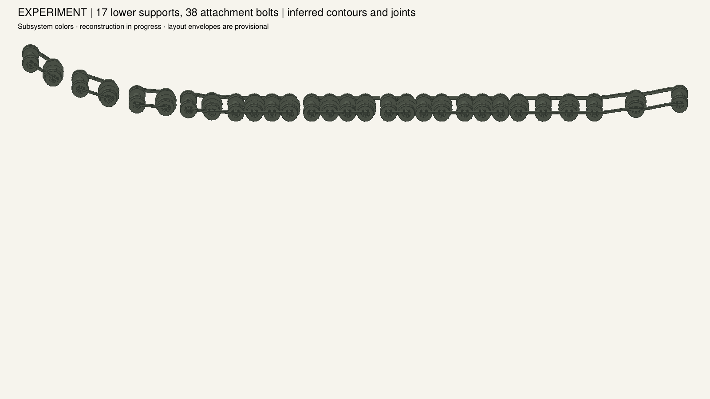
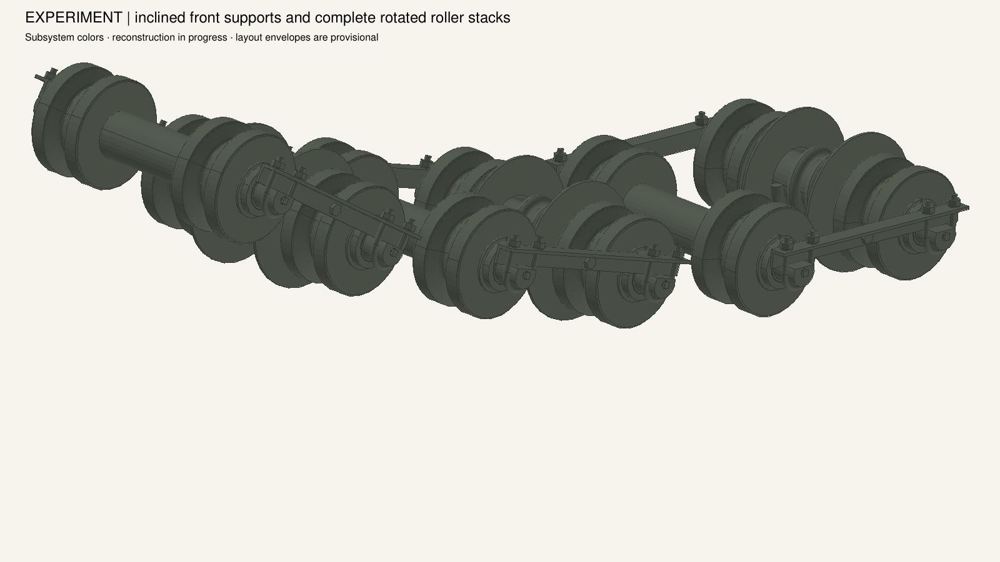
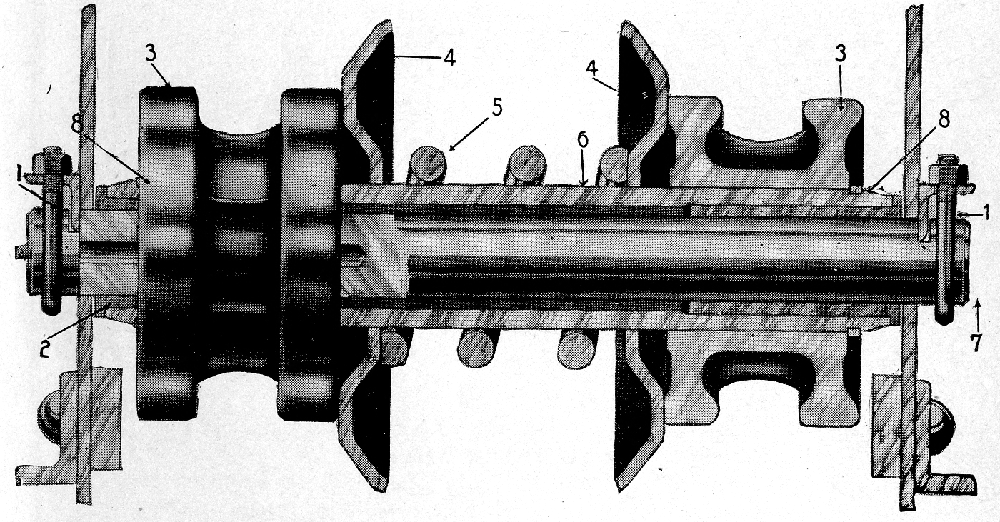
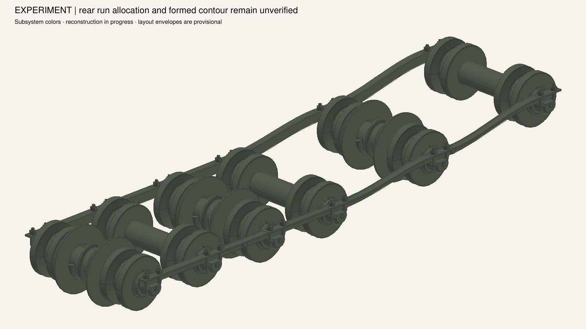

Lower roller support installation — experimental geometry
34 source-identified angles and 76 catalogue-counted bolts. This is an installation experiment; the qualified tank and numbered isometric snapshots remain at stage 007.
These views compare arrangement and topology. They do not share a metric camera calibration. The support contours follow the current reconstructed pin stations, with source station offsets retained. Historical correctness and structural capacity are not established by a geometric fit.
SNL Plate 2. Callouts 6–13 identify eight lower support runs. The final two large roller outlines need further reconciliation with the rear run.

Native port bank: eight outer and nine inner pieces. The three steep front pairs and the level central bank are recognizable. The smooth rear extension is a reconstruction assumption.
Front support topology

The complete front units rotate about their transverse shafts. Pin flats and washers seat on the inclined angles; the bearing parts retain their common axis.

HB89 distinguishes the upper pin-support angle from the lower skirt reinforcement. The model now has the upper support family; the lower reinforcement and detachable retention details remain incomplete.
Rear contour remains provisional

Horizontal pin seats connect through cubic transitions. These avoid the gaps from a straight angle, but the rear six-station allocation and manufactured contour are unverified. No source scale or roller diameter was altered to hide this disagreement.
HB144 requires removing plates on the support angles before withdrawing the pins. Their separate identities and exact geometry remain unresolved. The short attachment bolts are modeled with inferred tapped joints; the catalogue row does not identify nuts and washers.